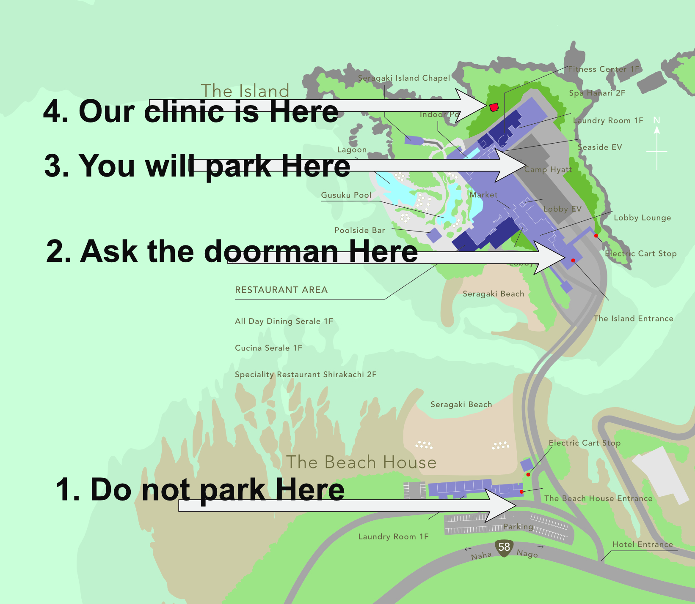
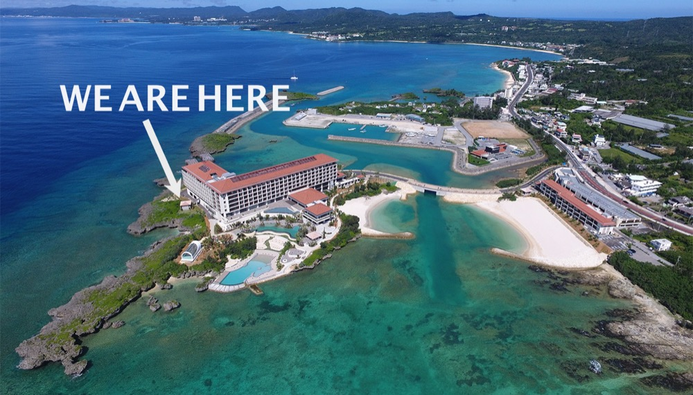

For VA Examinees:
We are located on the premises of the Hyatt Regency Seragaki Island
1108 Seragaki, Onna Village, Okinawa
Our clinic is in a secluded cottage at the back of the main hotel structure, facing the northwest ocean and directly across from the Fitness Center.
Estimated travel time: ~40 min from Camp Foster | ~30 min from Kadena AB
Please arrive on time for your scheduled appointment.
Appointments are scheduled by Leidos QTC only. The clinic cannot book, reschedule, or cancel appointments. For any scheduling changes, please contact QTC directly using the information in your appointment letter.
What to Bring
- Photo ID (CAC / Military ID)
- Any relevant medical records not yet uploaded to VA
Parking
Parking is free for VA examinees. Follow the doorman's instructions for the designated parking area.
How to Reach Us:
- Do NOT park in the lot before the bridge labeled “The Beach House.”
- Proceed across the bridge to the valet parking at the main hotel entrance.
- Inform the doorman: “I’m here for the Nirai Seaside Clinic VA examination.” They will guide you to the proper parking area.
- Call us at 090-4524-2828 (from a U.S. phone: +81-90-4524-2828). We will personally come to escort you.


Our Mission
About Us
Our Director, Dr. Shungo Hiroyasu, is a seasoned physician who earned his degree from the National Defense Medical College in Japan and began his career as a Flight Surgeon with the Japanese Self-Defense Force. During his academic career, he worked at the University of Pennsylvania and Albert Einstein College of Medicine in New York. For the past few years, he has been engaged in Veterans Affairs (VA) Disability Examinations. In 2025, we relocated to fully focus on VA examinations, including Audiology, General Medicine, and Sleep Studies. We take pride in serving those who have served the United States.
Our VA examination services are a crucial step in the journey toward veterans receiving government benefits. We will perform a comprehensive and impartial evaluation, documenting the severity of disabilities and their connection to military service. However, we do not provide treatment, refer patients to specialists, nor make final determinations regarding service connections.
Process Summary
If you have submitted a claim to the U.S. Department of Veterans Affairs (VA) for disability compensation or pension benefits and it has been approved, the VA will randomly assign you to an examiner for your disability evaluation. In partnership with International SOS, Dr. Shungo, a certified VA examiner, will perform the examination. This process includes reviewing medical records, performing a physical exam, asking detailed questions regarding your medical history and symptoms, as well as evaluating how the claimed disabilities affect your ability to perform any occupational task. We aim to facilitate these steps for veterans in a comfortable and efficient manner.
Clinic Information
Office Hours
| MON | 9:00 - 17:00 |
|---|---|
| TUE | 9:00 - 17:00 |
| WED | Closed |
| THU | 9:00 - 17:00 |
| FRI | 9:00 - 12:00 |
| SAT/SUN | Closed |
Director: Dr. Shungo Hiroyasu
Affiliated with International SOS
Medical Corporation RYOSHUKAI Group
Headquarters: Kanauchi Medical Clinic